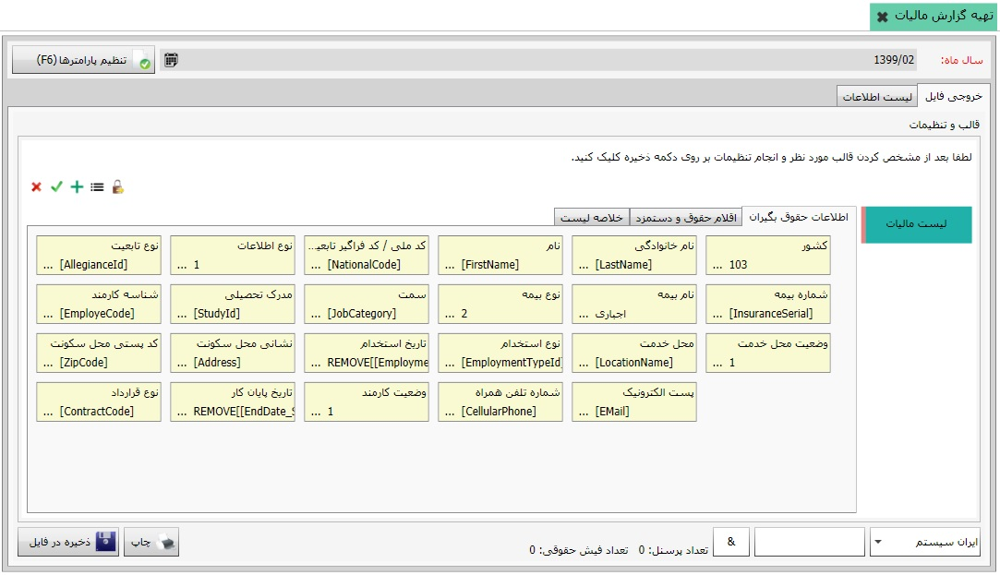
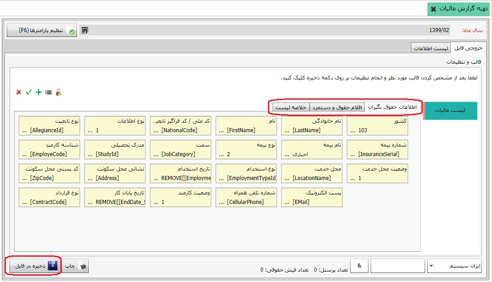

برای فعال شدن صفحه ی تهیه ی گزارش مالیات ابتدا در سر برگ این صفحه گزینه ی سال ماه را تعیین کنید و سپس بر روی کلید تایید و مشاهده کلیک نمایید تا صفحه ی زیر نمایان شود:
همان طور که می دانید شرکتها موظف به پرداخت مالیات بر درآمد پرسنل خود می باشند، همه ساله از سوی دولت جداول مالیاتی اعلام می شود که هر شرکت موظف است بر اساس آن جداول، مالیات بر در آمد پرسنل خود را پرداخت کند، روش پرداخت به صورت اینترنتی می باشد، مودیان لیست مالیات را در قالب فایل هایی تهیه می کنند و سپس تسلیم اداره ی امور مالیات می نمایند، به تصویر زیر دقت کنید:
 در تصویر بالا پس از تکمیل کردن اطلاعات مورد نیاز در سه تب، بر روی کلید ذخیره در فایل کلیک کنید تا فایل های مورد نظر شما در مسیر انتخاب شده ذخیره گردند.